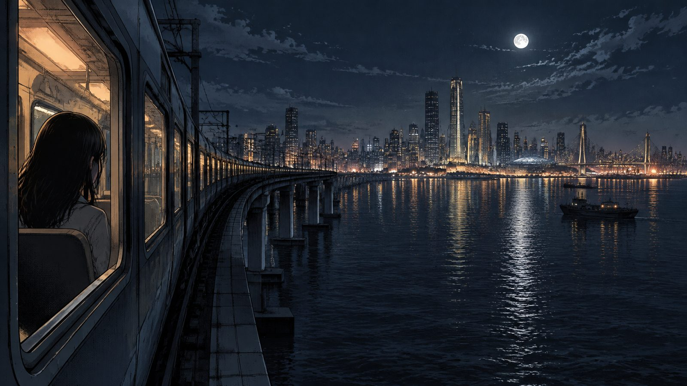
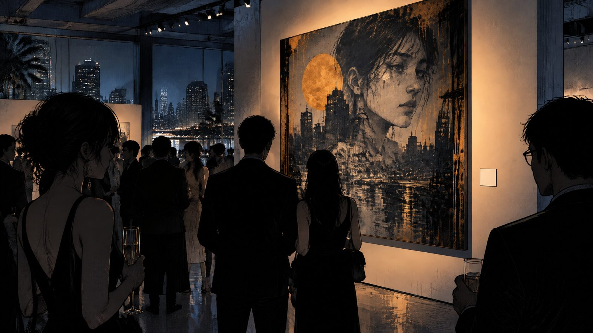
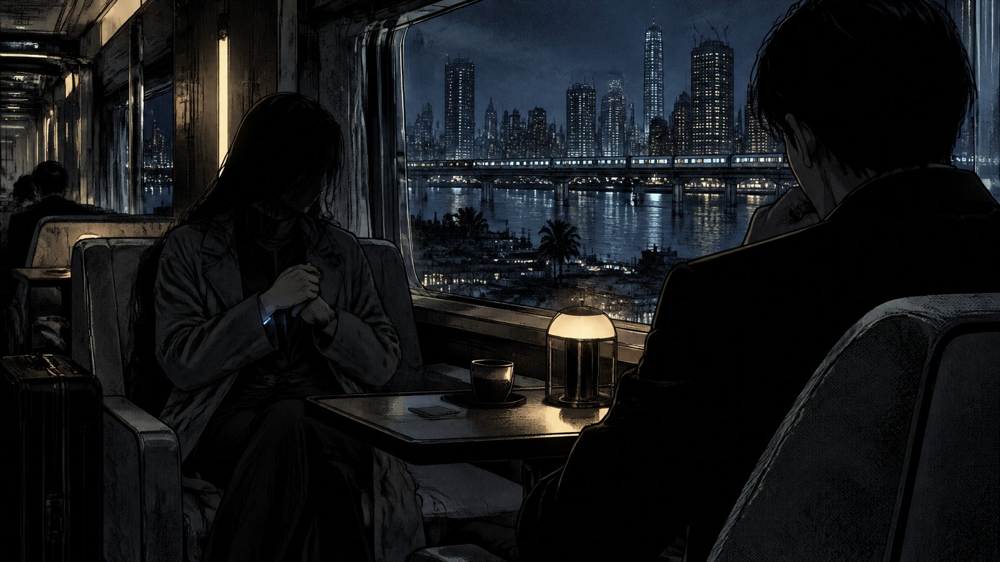
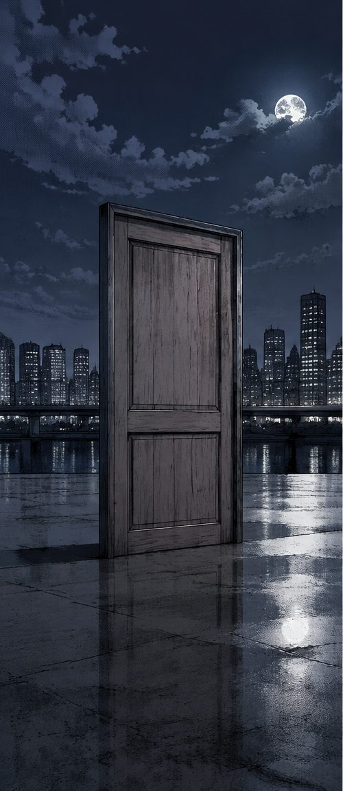
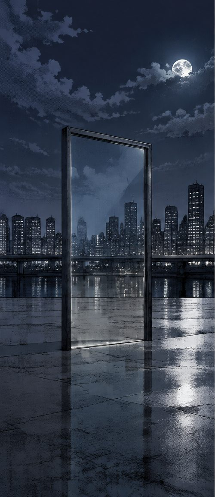
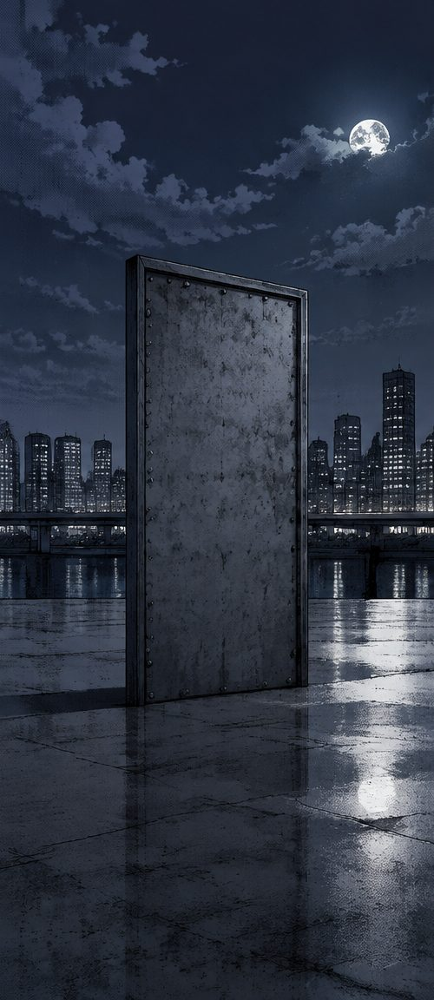
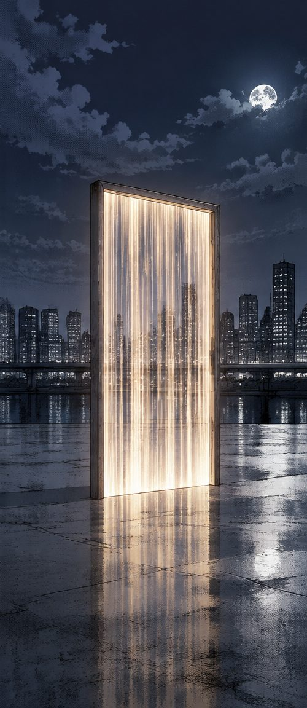

You wake on a train you don't remember boarding. Where it takes you depends on who you turn out to be.
Voice game · In development

The Koan Epoch is a voice-driven story you play out loud, hands-free, in short sittings.
In a near future where everything is provided, art, desire and dreams have become the currency, and you arrive in Manila with something in your arm and no memory of why.
Each run ends somewhere different.






Concept images